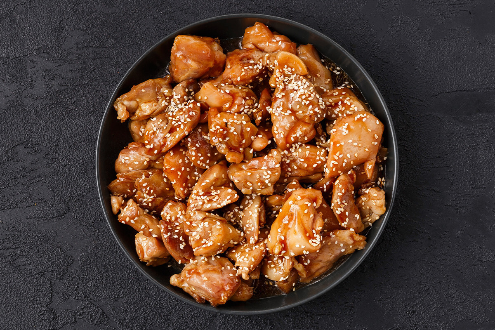

Цыпленок Терияки
Ингредиенты:
- Куриное филе - 500 г
- Соевый соус - 50 мл
- Мед - 2 ст.л.
- Чеснок - 3 зубчика
- Кунжут - 1 ст.л.
- Крахмал - 1 ч.л.
Приготовление:
- Обжарьте курицу до золотистой корочки
- Приготовьте соус из соевого соуса, меда и чеснока
- Потушите курицу в соусе 10 минут
- Подавайте с рисом и кунжутом